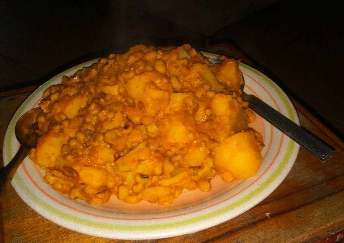

Rice and Potatoes

This is porridge beans with potatoes, my favourite dish
porridge beans and potatoes is one of the the most nutritious meal that is right on all the six classes of food
It can easisly be made by anyone not to mention the ingredients for the meal wouldn't eat deep into your pocket
ingredients
- Beans
- Potatoes
- Red oil
- Maggi
- Salt
- Tomatoes Sauce
- Pepper
- Onions
Steps
- Put Beans on fire
- Parboiled the beans after 10 minutes to remove chemicals used in preserving them
- After an hour or so, when the beans has become soft...
- Add potatoes(after peeling) to the beans
- Use a separate pot to fry the tomotoes, afterwards add onions, pepper, salt, maggi to the sauce
- Then add the prepared sauce to the beans and potatoes
- Wait for 20 minutes
- There you go, your yummy and delicious food is ready